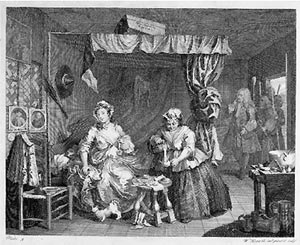
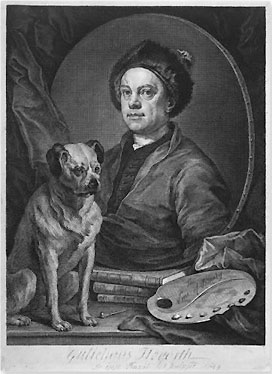

|
William
Hogarth (1697-1764)
From
an apprenticeship to a silver engraver and training in the informal
drawing academies of the day (one of which was run by Sir James
Thornhill, Sergeant Painter to the King, whose daughter Jane he
married), William Hogarth became the leading artist of his generation.
The advancement of his own career went hand-in-hand with a wider
promotion of British art. In 1735 he set up a drawing academy in
St. Martin's Lane, London, which for thirty years was run on a co-operative
basis and formed a focus for the development of the rococo style
in Britain; in the same year he was largely responsible for the
passing of the Engravers' Copyright Act; in 1736 and 1737 he gave
two large-scale paintings, The Pool of Bethesda and The
Good Samaritan, to St. Bartholomew's Hospital (where they still
hang) in order to demonstrate that a British artist was capable
of historical composition on a grand scale; in the 1740s his gifts
of paintings to the Foundling Hospital helped to establish it as
a place where artists could exhibit their work to the public. His
last years, however, were dogged by disputes with younger artists
largely caused by his opposition to plans for a British royal academy.
In 1753 he published his controversial treatise The Analysis
of Beauty the manuscript material for which can be read in the
British Library (Egerton MSS.3100-16).
Hogarth
was equally important as a painter and as an engraver and he derived
a large income from publishing engraved versions of his paintings.
Although a fine portrait-painter, he is best remembered for his
'Modern Moral Subjects', combining a rococo style with satirical
comment on contemporary society. His first great success in this
genre came in 1732 with A Harlot's Progress. One thousand
two hundred and forty sets of the first edition were sold at one
guinea (£1.05) each.
Right:
A Harlot's Progress, Plate 3, 1732,
Etching and engraving, 319 x 384 mm, Paulson 123
Hogarth's
paintings were mainly worked direct on to the canvas and his studies
from life often took the form of thumbnail sketches. Only about
one hundred drawings survive, and more than half of these belong
to the British Museum. They have all been entered on the computer
database which is available for consultation in the Study Room.
No complete catalogue of Hogarth's drawings has been published since
A. P. Oppé's The Drawings of William Hogarth, 1948.
The
Museum's collection includes all known preliminary drawings for
the series Industry and Idleness and the copper plates. There
are also drawings by Hogarth in Hogarth's Peregrination,
his friend Ebenezer Forrest's manuscript account of a boisterous
tour of the Thames estuary undertaken in 1732.
Prints
by Hogarth can be found in most of the leading museums in the UK,
as well as in many smaller collections. Almost all his copper plates
survived until the early part of this century and were frequently
reprinted, with the consequence that many worn and re-worked impressions
exist. The Museum has one of the finest collections of the prints,
including rare early impressions, and was used as one of the principal
sources for the standard catalogue of prints, Ronald Paulson's Hogarth's
Graphic Works (three editions: Yale University Press, 1965,
1970; The Print Room, 1989). The main series of Hogarth's prints
is arranged according to Paulson, in parallel mounted and unmounted
series.
All the important prints and a number of minor examples are on permanent
display at Hogarth's summer villa at Chiswick in west London which
is open to the public and was refurbished for the tercentenary of
his birth in 1997.
Left:
William Hogarth, Self-Portrait with Pug: Gulielmus Hogarth,
etching and engraving, 1749
Paintings
in Other Collections
| London
|
National
Gallery
Sir
John Soane's Museum
Tate Britain |
Further
Reading
Beckett,
R.B. Hogarth. Routledge and Kegan Paul, 1949
Bindman,
D. Hogarth. Thames and Hudson, 1981
Bindman,
D. Hogarth and His Times: Serious Comedy. British Museum
Press, 1997
Oppé,
A. P. The Drawings of William Hogarth. Phaidon Press, 1948
Paulson,
R. The Art of Hogarth. Phaidon Press, 1975 (with bibliography
of early publications)
Paulson,
R. Hogarth. Lutterworth Press, 1992-1993
Uglow,
J. Hogarth: A Life and a World. Faber and Faber, 1997
Craske,
M. William Hogarth. Tate Publishing, 2000
Hallett,
M. Hogarth. Phaidon Press, 2000
|